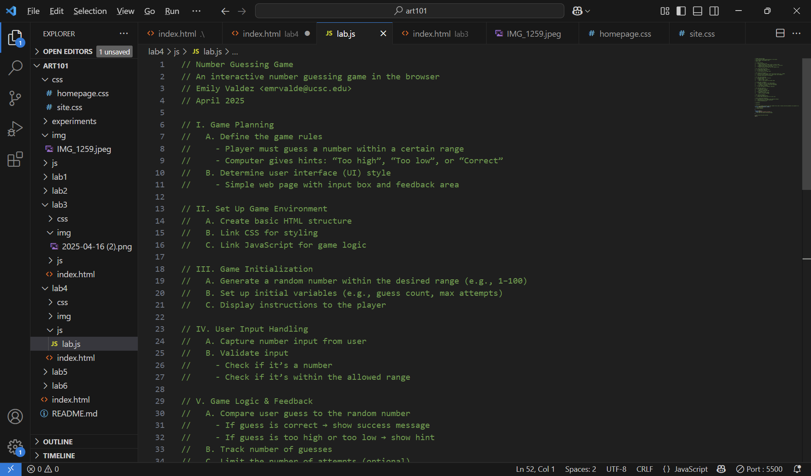

Lab 4 - Psuedocoding and Problem solving
Challenge
A challenge was writing a list of a simple game.
Problems
One problem was organizing the outline of te simple game tasks. I solved this by researching on game development and how to create a simple game.
Reflection
This assignment went pretty well for me and my partner. We put in great effort into organizing and doing it on time.
Results
I successfully completed the assignment.
High-Level Tasks for Game
This is the task list used to plan and build the game:
- Game Planning
- Define game rules
- Decide on interface layout
- Set Up Game Environment
- Create HTML structure
- Link CSS and JavaScript
- Game Initialization
- User Input Handling
- Game Logic & Feedback
- End Game Conditions
- Restart Mechanism
- Styling and Polishing
Pseudocode Comments in JavaScript
This is the commented pseudocode from our JavaScript file:
// Number Guessing Game
// An interactive number guessing game in the browser
// Emily Valdez
// April 2025
// I. Game Planning
// A. Define the game rules
// - Player must guess a number within a certain range
// - Computer gives hints: “Too high”, “Too low”, or “Correct”
// B. Determine user interface (UI) style
// - Simple web page with input box and feedback area
// ...
Images
Below is a screenshot of the list for the simple game interface:
